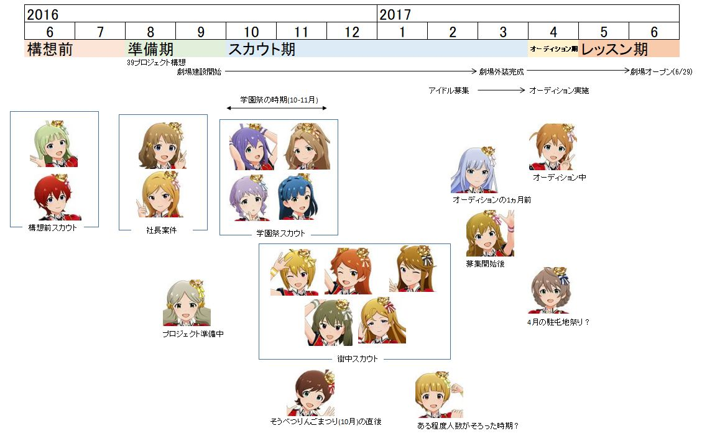
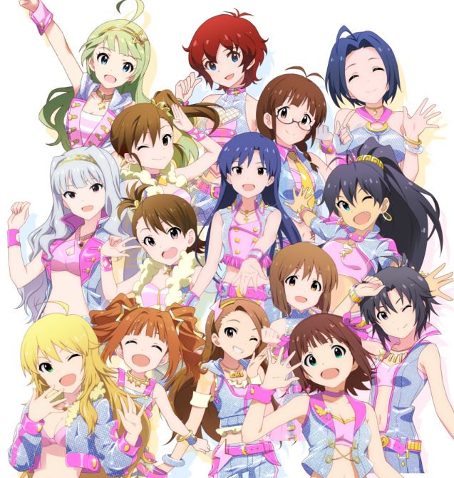

ミリシタ39プロジェクト 加入順の推定
はじめに
メモリアルコミュ1の記述を元に39プロジェクトへの加入順を推定した考察がいくつか存在する。
- 黒須はロコが「準備中」にスカウトされたことから、一人目であると推定している。また同時期にまとめサイトでも同様の記載がある。両者の関係は不明。
- かめぴPはスカウト組およびオーディション組の中の加入順を推定している。
本検討では、上記の「ロコ一人目説」を検証するとともに、スカウト組で他メンバーについても順番を推定することを目標とする。
メモリアルコミュ1の調査結果の整理
ミリシタでスカウト組(かめぴPの分類基準による)のメモリアルコミュ1を閲覧し、39プロジェクトに言及した箇所をにまとめた。
エレナとジュリアのスカウトシーンでは、「39プロジェクト」に全く言及されておらず、不自然さを感じる。
スカウト活動で何が起こったのか
に整理した結果から推定されることを列記する。
- オーディションでの採用人数を確定してからオーディションを実施したはず(多少の変動はあるにせよ)。つまりスカウトでの採用はオーディションの前に終わらせたはず。
- エレナとジュリアのスカウトシーンでは、「39プロジェクト」に全く言及されていない。基本的には、スカウト組のメモリアルコミュ1では冒頭に39プロジェクトについて言及されている。冒頭で言及がない海美、紬、のり子についても、スカウトする際にはプロジェクトに言及している(紬は示唆のみ)。エレナとジュリアのみプロジェクトへの言及がないのはかなり不自然である。エレナとジュリアは39プロジェクト構想が立ち上がる前にスカウトしたのではないだろうか。
- 社長が引っ張ってきた案件は、桃子、莉緒、ひなたの三件
- 桃子：社長は前々から有名子役の桃子に目をつけていたからこそ39プロジェクトに引き込んだと考えられ、プロジェクトが立ち上がった直後に声をかけたはず。わざわざオーディションの時期まで待つ必要はない。そのためプロジェクトのごく初期で面接したと考えられる。
- 莉緒：39プロジェクト構想を立ち上げて気が大きくなった社長が、バーで同席した莉緒に自慢してスカウトする流れになったのではないか？ 完全に想像でしかないが。
- ひなた：社長案件はプロジェクトの初期段階で持ち込まれた可能性が高い(プロデューサー所掌のスカウト・オーディションに影響を与えないため)。ただし桃子・莉緒とは異なり、ひなたのコミュでは「39プロジェクトのアイドルを探し求めていた」ことが明記されているので、アイドル探し活動はすでに始まっていたことが分かる。そのため桃子・莉緒よりも遅い時期だと推定。なお、町のリンゴ祭の歌姫に選ばれて社長が声をかけたとのことであるが、もしかしたらひなたの祖母(元歌手)と社長が知り合いで、孫のひなたを見せるために社長を祭に呼んだ可能性もある。
- ロコのコミュでは「39プロジェクトの準備を進める傍ら」と記載されている。あくまでも準備中であり、本格的なスカウトやオーディションは始まっていない様子である。そのためスカウト時期よりも前であると推定。
- 紬を誘ったのはオーディションの1ヶ月前。少し時期が開いているので、スカウト期より前またはスカウト期の初期と推定。
- 海美のコミュでは、Pが衣装店にポスター掲示→海美がポスターを見る→書類提出→店でPと海美が会う→(オーディション)、という流れであることが分かる。したがって、海美とPが会ったのはオーディションよりも前であるが、それほど遠くない時期であると推定。
- 謎：プロデューサーがアイドル募集のポスターを貼り始めた直後に未来と出会い、その数日後に未来はオーディションを受けた。さすがにポスター掲示からオーディションまでの時間が短すぎる。→(想像)未来のコミュで貼っていたアイドル募集ポスターは、劇場周辺の住民に対するアナウンスを目的としたものなので、掲示が遅くなった。アイドルを目指す人が訪れるような場所には、すでにいろんな場所にポスターは掲示済みである。
- 謎：未来のコミュで「『39プロジェクト』、いよいよ始動だ！」 … 「始動」とは？？ → 「始動」=オーディションってことかなぁ？
39プロジェクト加入またはプロデューサーと出会った順番の推定
調査結果およびアイドル固有情報を考慮し、プロデューサーに出会ったと推定される時期をに整理した。
劇場のこけら落としをミリシタのリリース日2017年6月29日と仮定した場合のタイムラインをに示す。

スカウトタイムライン
エレナとジュリアは765ASになっていたのかも…
妄想です。
- 765プロでは12名のアイドルがデビューし、順調に活動を続けている。そのプロデュース活動の中、プロデューサーはエレナとジュリアに出会い、その才能に惚れ込んで765プロに誘った。プロデューサーは765プロの14, 15人目のメンバーとしてプロデュースするつもりで準備を進めていた。
- 社長は知り合いから元有名子役 桃子の近況を聞いた。ピンとくるものがあり、桃子を765プロに入れることを考えた。その時、最近プロデューサーが新人アイドルを2名スカウトしたことを思い出した。そこで社長は、このタイミングで一気に人員を拡大することを閃いた。これが39プロジェクトの始まりである。
- 39プロジェクト開始の時期がずれていたら、エレナとジュリアが765ASの一員となっていた世界があったのかも……

あったかもしれない765AS
参考文献
本資料ではアイドルマスターミリオンライブシアターデイズの画像を用いています。それらの画像の著作権はBNEI社にあります。